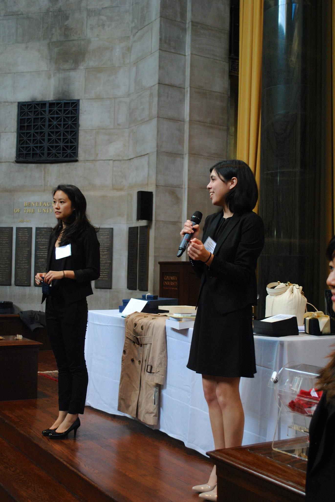
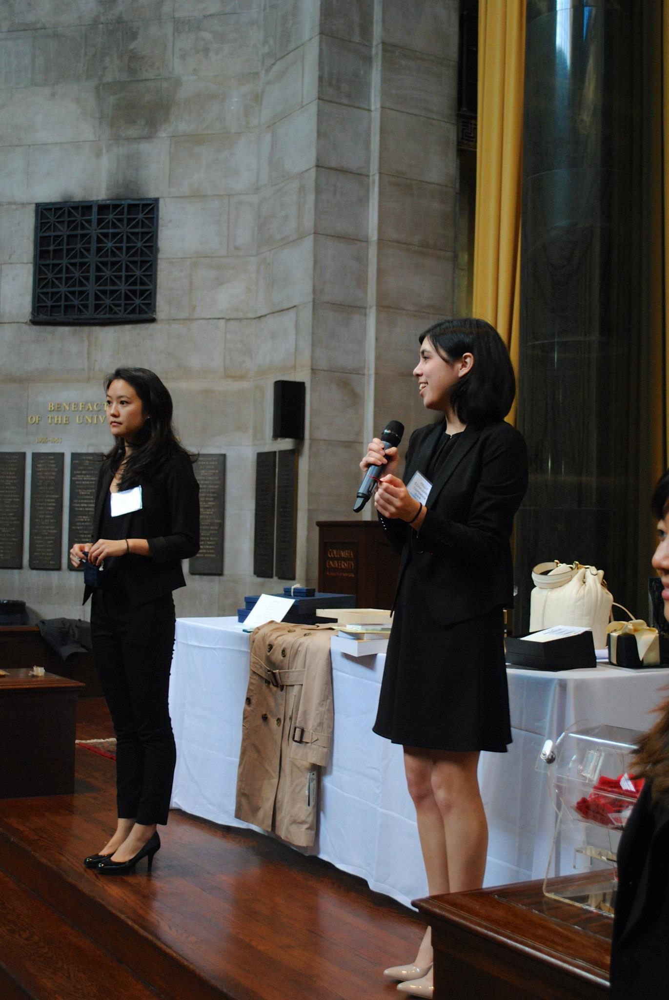

Upcoming Events
CWBS EVENTS:
Credit Suisse: Navigating the Recruitment Process
Date: Wednesday, April 22
Time: 8:00pm - 9:30pm
Location: Math 312
Dress Code: Business Casual
Info:Interested in finance but not sure where to start? Join us for an opportunity to learn more about Credit Suisse, and meet some of our analysts and the campus recruiting team. This event is an opportunity to learn about our junior-year internship opportunities across various divisions, and receive advice on how to better position yourself for an internship.
Register here
About: Credit Suisse is a forward-thinking financial services firm providing Private Banking, Investment Banking and Asset Management services to clients worldwide. We're a stable global bank with a long heritage in the financial services industry.Our entry-level programs give you the chance to make a difference from day one, and provide world-class training and support to enable you to develop into a future business leader. And throughout your career with us, you will benefit from cross-business and international mobility opportunities.Our vision is to become the world's most admired bank. A career with us means that you can help shape our future.
Questions? Please contact: Caroline Gray
CWBS NYC Intern Mixer
Date: Thursday, April 30, 2015
Time: 8-9:00 PM
Location: 504 Diana
Dress Code: Casual
Info:Join Columbia Women's Business Society, WICS Columbia, Columbia Society of Women Engineers, and Smart Woman Securities - Columbia University for a casual hangout to meet other women interning in NYC this summer! Discuss housing, commuting, goals for your internship...and more! Reconnect with old friends and make new ones before we take off for the summer. Food will be provided.
RSVP
Can't attend but want to be included in our Summer Intern Directory? Fill out the form above and we'll include your information so we can stay in touch!
CAREER EVENTS
Back to the TopFDM Women in IT Advantage Session: Breaking Myths and Broadening Horizons
Date: Thursday, April 23
Time: 5:00PM - 7:00PM
Location: FDM Group, 29th floor, 14 Wall Street, New York, NY 10005
Info:Are you looking to launch your career in the world of technology? FDM is hosting an inspirational evening dedicated to female graduates and students who are interested in pursuing a career in IT and business. Guest speakers include Aurelia Moser (NYC Chapter Leader of Girl Develop It) and FDM Consultants placed with clients Bank of America Merrill Lynch and HSBC. To RSVP please email your resume to ITGirls@fdmgroup.com
Turn an Internship into a Full-Time Offer hosted by CCLBA
Date: Wednesday, April 22, 2015
Time:7:00-8:00 pm
Location: Broadway Room, Lerner Hall
Info:At the beginning of the school year, CCLBA presented its annual "How to Land the Ultimate Internship" panel. Now, we're bringing back our speakers one last time before they graduate to share their secrets on how to turn that summer internship into a return or full-time offer. Companies represented include Goldman Sachs, BCG, Credit Suisse, and Morgan Stanley. Panelists have worked in a variety of fields including investment banking, sales & trading and consulting. After the panel, speakers will be available to give any personal career advice you may be seeking.
Dropbox Event
Date: Thursday, April 30
Time: 6:30PM - 8:00PM
Location: Dropbox office on W. 19th St
Info: On Thursday, April 30th, Dropbox will be hosting a networking event for students in the NYC area. As you start to think about life past college, we want to make ourselves available to chat about starting a career & diversity in Silicon Valley. This is a casual atmosphere where you can meet with some members of the Dropbox team, as well as other students from in area and speak candidly about life in tech. ITGirls@fdmgroup.com
Brunchwork Events
A team of recent Dartmouth/Stanford grads team up with Jon Levy (Influencers founder, leading super connector) on brunchwork. We have been running monthly brunches for successful 20-somethings interested in entrepreneurship and non-traditional careers. Past speakers include authors, investors, and CEOs/execs from Plated, Greenhouse, and Uncubed. Many Stern WBS have been attending our sold out brunches and we believe CWBS members would also be interested. Our April brunchwork is with Laurel Touby (mediabistro founder, angel investor) + Tiffany Pham (MOGUL founder + CEO, former director of business strategy at CBS, 30u30)Buy tickets Special discount code ("COLUMBIA") for CWBS members!
Credit Suisse Equities Japan
What is it like to be a summer intern within Equities at Credit Suisse in Japan? What level of duties are interns assigned? What is a typical day in Equities Sales? How to choose between Equities Sales and Research? What is the culture in the Credit Suisse Japan office? Join our online events to have your questions answered and get first-hand information and insight from senior managers and recent graduates from Equities Sales, Trading and Research and get a head start on your career decisions We primarily fill our full-time positions through our summer internship programs, joining us as an intern will give a head start in building a long-term career in Japan. We screen and identify strong talent through events, we also will not attend the Boston Career Forum this fall, therefore registering and attending these events will increase your chances of securing an interview in October 2015 for the Japan summer internship programs in 2016. You can attend them remotely through your PC/Laptop.
Event 1: Japan Virtual Recruiting Information Session
Join Credit Suisse Japan representatives through an exciting online session in September (exact date TBC) with live chat to find out more about our Firm and summer internship programs. Please register your interest here.
These events are suitable for overseas undergraduate, Master's and MBA students graduating between December 2016 and June 2017, preferably with English and Japanese business level language capabilities. Please circulate this message to interested colleagues, friends and members.
2016 Tokyo Summer Internship Application Deadline: Thursday, October 2, 2015 at 12:00 noon (Japan local time). Please apply online. We encourage you to apply early as all applications will be reviewed on a rolling basis.
To learn about Credit Suisse and our programs
For further enquiries
INTERNSHIPS & FULL-TIME POSITIONS
Back to the TopLazard Freres & Co. LLC. Social Media Intern
Info: Lazard is the world's leading independent financial advisory and asset management firm. We serve clients with thoughtful advice and effective solutions to strategic and financial matters. Founded in 1848, we operate in 43 cities across 27 countries around the world. Our deep roots in local business centers form a global network of relationships with key decision-makers in corporations, governments and investing institutions.We are looking for a social media savvy, resourceful intern to assist with an exciting project helping to build the Lazard Alumni Network Database.
Job Title: Social Media Intern
Business Unit: Corporate Events/ Digital & Media
Reporting to: Head of Event Planning
Role:
- Define and manage data collection for Lazard Alumni Networking Project (CEO sponsored)
- Execute methods for gathering feedback and generating reports
- Analyze data to measure project effectiveness
- Ability to visualize data
- Strong social media navigation
- Strong oral and written communications
- Working towards Bachelor’s degree at an accredited college or university (All Majors Welcome)
- Prior work experience in marketing, digital and media, or social media strongly suggested
- Resourceful and works well independently
- Comfort with MS PowerPoint, Excel and Word; Knowledge of JavaScript a plus
Apply Here
STOXX Ltd
Info: STOXX Ltd, part of the Deutsche Borse Group and the largest European index provider, is looking for a full-time summer intern in the sales department. While the position will largely focus on sales support, students will have opportunities to work closely with the Product Development and Market Development team in their development of new indices and investment concepts. The position requires fluency in Microsoft Office and all majors are welcome to apply.
Please send your resume to Conor Cashel to apply.
PROGRAMS & OTHER OPPORTUNITIES
Back to the TopIgnition Grants
The deadline for the 2015 cFUND Ignition Grant application is on April 30 by 11:59 pm. Each venture team will be required to submit executive business summaries by the April 30 deadline via YouNoodle. cFUND Ignition Grants are financial grants to assist Columbia University current undergraduate and graduate SEAS students in launching new businesses, social and not-for-profit ventures. cFUND Ignition Grants support the initial stages of early venture development from formation, IP protection, and incubation to building prototypes and creating proofs of concept. There are three levels of Ignition Grants: Formation ($5K), Incubation ($10K), and Pre-Seed ($20-50K). $5K Formation Level: $5,000 grants that allow ventures that have demonstrated sufficient seriousness and have well-defined teams to pay for incorporation, founders' agreements, trademark searches, domain names, etc. $10K Incubation Level: $10,000 grants for well-formed teams to offset incubation expenses including one year at Columbia Startup Lab facilities and non-salary operating expenses. $25K-50K Pre-Seed Level: $25,000-$50,000 grants allow the most advanced teams do the work necessary to empirically prove market acceptance, affirm the underlying assumptions of their business model and / or build a prototype Last year, thirteen early-stage student startups collectively received $133,000 in cFUND Ignition Grants. Grant recipients' startup ideas ranged from new text-to-image software, innovative health care web applications, and 3D sculpture reproductions brought directly to the user, including Wordseye, Neuroscout, Cheddar, and Medicotravel. For more information, check out the website here or feel free to contact us with any questions! Finally, don't forget to check out Attorney Najia Khalid's presentation on Immigration Issues for Startups and Foreign Entrepreneurships on April 13th from 1-2 pm in the Davis Auditorium (412 Schapiro). After the presentation, Najia will be available for an open Q&A session.
Campus Sherpa Tour Guide
Campus Sherpa is a personalized college touring company which allows visiting prospective high school students to pay college students to give them a more personalized college tour based on their individual interests. It supplements the official college tour by giving prospective students a real look into student life at the university of their choice. Students can meet with club leaders, see student dorms, and attend classes that pertain to their interests. Our sherpa guides begin at $15 per hour. Our guides can work on their own schedule and decide which tours they want to accept or decline, it's up to you.
If you're interested in becoming a Sherpa and getting paid to be a personal tour guide, click here
Apply for Harvard Business School's Summer Venture in Management Program
Application Deadline: May 11, 2015
The Harvard Business School (HBS) Summer Venture in Management Program (SVMP) is a one-week management training program for rising college seniors designed to increase diversity and opportunity in business education. This thirty-year HBS tradition demonstrates the many rewards of an MBA degree to students who may not otherwise have considered this path. Participants spend a week on campus living the MBA student experience – attending classes, analyzing case studies, and debating management issues with peers and faculty.
This unique educational experience gives participants a broader understanding of the challenges business leaders face, the innumerable opportunities that exist in management, and the impact they can have on their community and the world with a graduate business education.
Participants will be selected based on academic achievement, demonstrated leadership, and personal characteristics. Consistent with the objective of promoting educational diversity and opportunity in business leadership, additional criteria to be considered among others, are whether the applicant is:
- The first family member to attend college
- A member of a group that is currently underrepresented in business schools and corporate America (e.g. African-American, Latino, Native American, Lesbian, Gay, Bisexual, or Transgender)
- From a family with little business education or experience; and/or
- From a school whose graduates do not typically attend a top-tier university (e.g., attends a rural or predominantly minority college, or has attended a community college as part of a four-year degree)
The SVMP Application will be available online in February 2015. The application deadline is Monday, May 11, 2015. To apply to and for more information about SVMP, please visit the program's website
Follow on Twitter @hbs_svmp_2015
Like us on Facebook at HBS Summer Venture in Management Program Alumni Association Recruiting